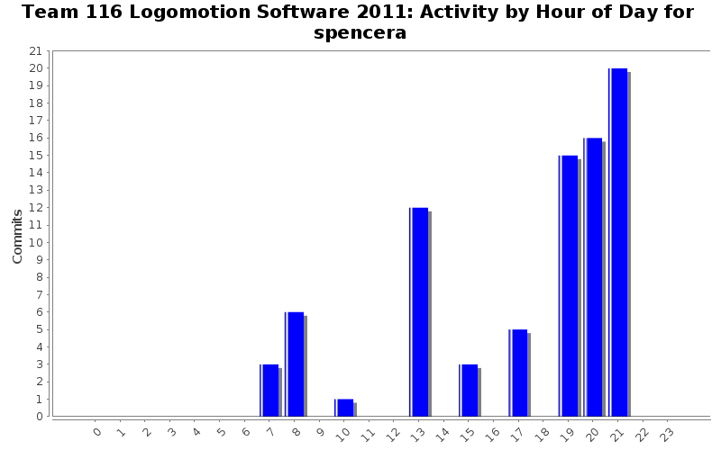
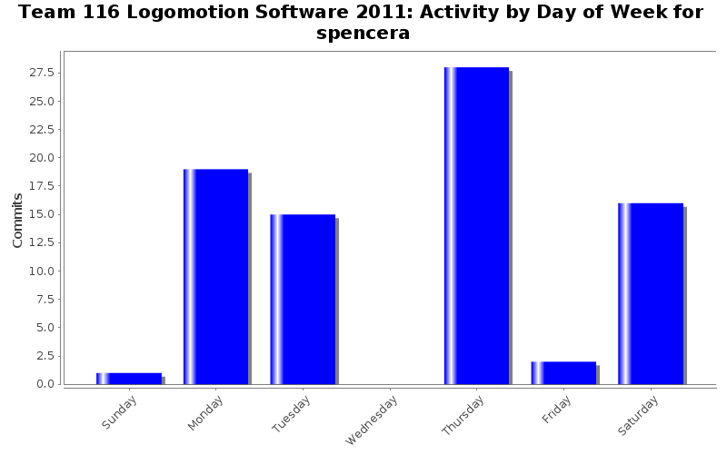

Activity in Directories
| Directory | Changes | Lines of Code | Lines per Change |
|---|---|---|---|
| / | 60 (100.0%) | 1221 (100.0%) | 20.3 |



| Directory | Changes | Lines of Code | Lines per Change |
|---|---|---|---|
| / | 60 (100.0%) | 1221 (100.0%) | 20.3 |
Minor code changes
27 lines of code changed in 3 files:
Tracking down inconsistencies, and added ton of FIXME's that need to be worked
69 lines of code changed in 1 file:
Removed some unused conflicts, but still channel conflicts in IO
72 lines of code changed in 5 files:
more debug for Mobility
11 lines of code changed in 1 file:
Correct format for floating point
3 lines of code changed in 1 file:
Additional debug
10 lines of code changed in 1 file:
Autonomous compiles!!
1 lines of code changed in 1 file:
Defined necessary functions to compile, and commented out code that is incomplete
21 lines of code changed in 2 files:
Removed extra logging code that didn't go with the function it was in, and was causing a compile error
0 lines of code changed in 1 file:
Still needs to be fixed, but it compiles
2 lines of code changed in 1 file:
Adjust psedo code to at least compile
17 lines of code changed in 2 files:
Makes minibot compile, still needs work
9 lines of code changed in 2 files:
Moved Minibot to be constructed during teleop mode only
3 lines of code changed in 1 file:
changed constants definitions to be more clear
30 lines of code changed in 2 files:
fixed slot versus channel mixup
10 lines of code changed in 3 files:
Refactored name of constants for slots and channel
18 lines of code changed in 4 files:
re-enabled functionality for end effector
25 lines of code changed in 1 file:
Pass in elevator and grabber to end effector
10 lines of code changed in 3 files:
Adjusting to initializatino within Robot.cpp
25 lines of code changed in 1 file:
Fixed EndEffector compile errors
7 lines of code changed in 2 files:
(6 more)